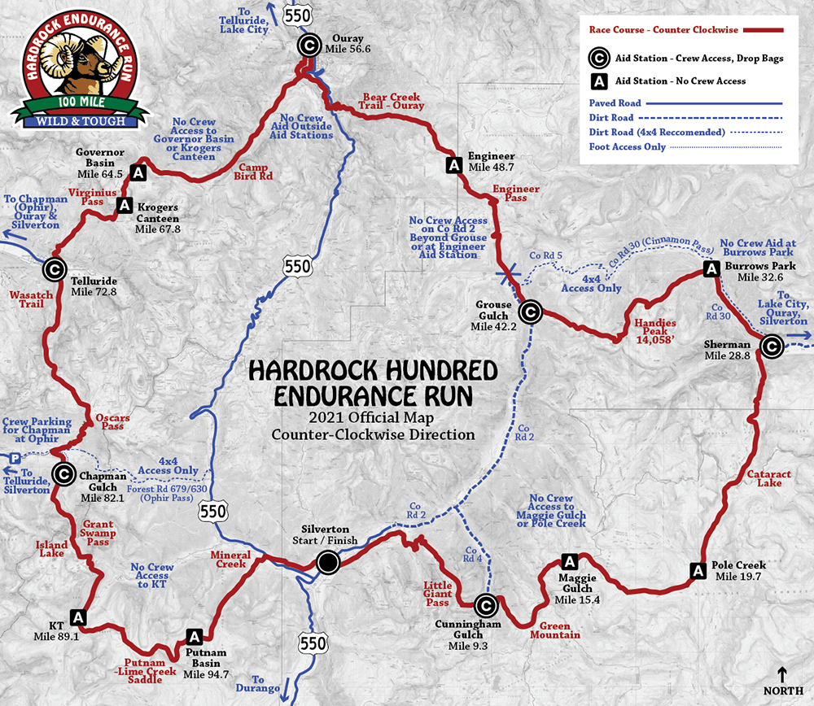

Hardrock Hundred Mile Endurance Run
About the race
- An ultramarathon 100.5 miles (161.7 km) in length, with 33,000 feet (10,000 m) of climb at an average elevation of over 11,000 feet (3,400 m)
- The race is held on a loop course on 4WD roads, dirt trails, and cross country in Southern Colorado's San Juan Range, USA
- The race is directed by Dale Garland
- Click here for an event description
